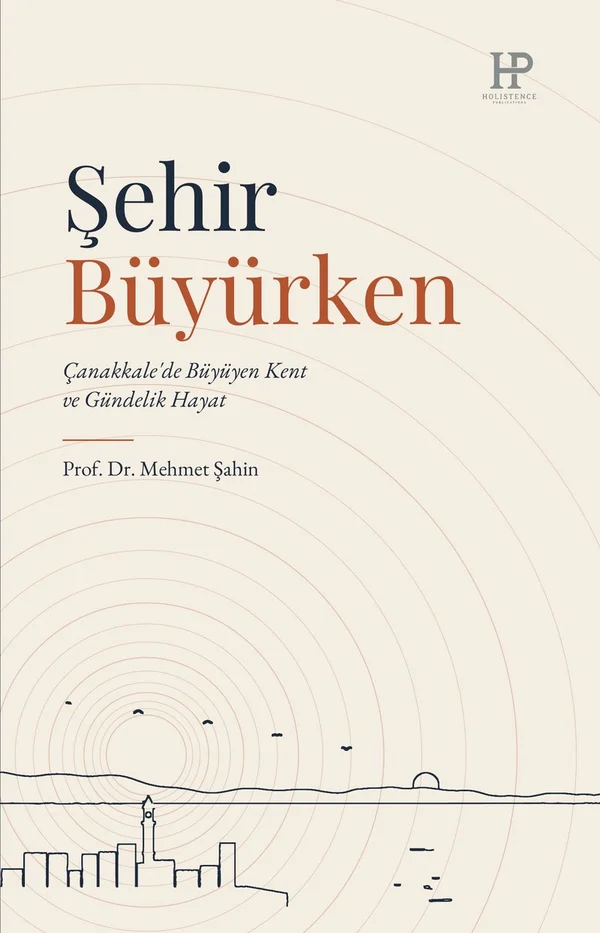
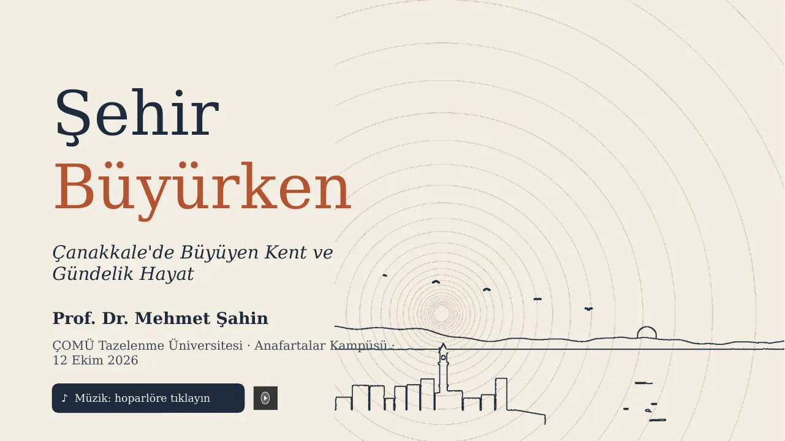

Şehir Büyürken
Çanakkale'de Büyüyen Kent ve Gündelik Hayat
Prof. Dr. Mehmet Şahin
Kentler büyürken insanların hayatları neden aynı yönde değişmez?
Bir şehir büyürken herkesin hayatı aynı ölçüde genişlemez. Son çeyrek yüzyılda Çanakkale coğrafi olarak genişledi. Binalar çoğaldı, sokaklar araçla doldu, nüfus arttı, üniversite büyüdü. Peki bu büyüme insanların gündelik hayatına ne taşıdı?
Şehir Büyürken, kentin sahip oldukları ile insanların gerçekten yapabildikleri arasındaki mesafeyi izliyor. Mezuniyet kararını tartan bir öğrenci, eczaneye yürüyen yaşlı bir adam, uzman hekim için bütün gününü yolda geçiren bir kadın. Resmî veriler ile gündelik sahneler yan yana duruyor.
Kitabın sorusu basit ama zor. Bir kent büyürken insanlarına kaç gerçek seçenek bırakır?
- Yayınevi
- Holistence Publications
- ISBN
- 978-625-5626-29-5 (basılı) · 978-625-7047-38-8 (e-kitap)
- DOI
- 10.55094/holistence.606
Şehir Büyürken: kitap ve şehir
ÇOMÜ Tazelenme Üniversitesi, Anafartalar Kampüsü'nde yapılan seminerin sunumu. Slaytlar arasında ok tuşlarıyla ya da aşağıdaki düğmelerle gezinebilirsiniz. Videolu slaytlarda videonun üzerine dokunun.

PowerPoint dosyası (filmler ve konuşmacı notları dahil, 26 MB): Sehir_Buyurken_Seminer.pptx
Seminer soruları
Seminerde sorduğumuz soruları burada yazılı olarak cevaplayabilirsiniz. Hepsine cevap vermek zorunda değilsiniz. Bir tanesi bile değerli. Cevaplarınız, izninizle, kitabın sonraki baskılarında ve bu sayfada kullanılabilir.
Seminerden sesler
Katılımcıların, yayımlanmasına izin verdiği cevaplardan seçmeler.